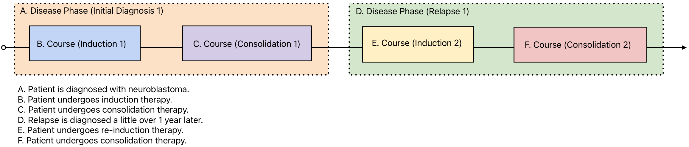

PCDC Data Contribution Guide
Who is this guide for?
This guide is intended for the individuals tasked with transforming an existing dataset into the PCDC format. These individuals typically have a variety of backgrounds (statisticians, data scientists, data managers, clinicians, etc.), but this guide will refer to such individuals as data analysts.
Resources
Data analysts should have been provided with what D4CG calls a Data Contributor Bundle. This is a spreadsheet consisting of three main components:
-
README - notes and guidance for your specific dataset.
-
Data Dictionary - tables, variables, and permissible values that constitute the target data format.
-
Data Sheets - with one sheet per data dictionary table, these are meant to contain your data once transformed and will be described in detail below.
If you have not received a Data Contributor Bundle, please reach out the the D4CG Data Standards and Modeling (DSM) team.
What has already been done?
The data dictionary you will use is the result of many months of modeling work by disease experts in your consortium.
How long will this take?
Pilot
The easiest way for the data analyst to learn the target data format, troubleshoot missing values or errors in the data dictionary, and to establish lines of communication with the DSM team is by starting the data transformation process with a small pilot of 3-5 patients. This isn't intended to take long, hopefully just a few days in the first few weeks.
We haven't had any groups who have not come back to the DSM team with questions at some point, and the most successful have been those who begin the pilot right away and quickly identify roadblocks.
Full
The full transformation process for each dataset depends on a variety of factors. The DSM team will plan on making quarterly contact with data analysts to ensure that any roadblocks are resolved without too much interim time lost.
Ad hoc meetings between the data analysts and the DSM team are also highly encouraged whenever question or issues arise.
The Data Contributor Bundle
Table guidance
Each table has a specific instruction as to how each observation should be encoded. For example:
The Subject Characteristics table directs implementers to include "One row per subject per study", "row" here meaning a row in the data sheet (specifically within the subject_characteristics data sheet). This row will describe a given patient's enrollment, data contributor, consortium, etc.

Contrast that to the Laboratory Test table, which some data dictionaries utilize. This directs implementers to include "One row per subject per test result". This means that a single patient may have multiple rows/observations in the laboratory_test data sheet, as opposed to the single row/observation per patient within the subject_characteristics data sheet.

These are straightforward examples, while other tables may be more complicated and context dependent. We encourage all questions about table guidance statements to be sent to the D4CG DSM Team who can explain in more detail and provide additional examples.
Implementation Notes
D4CGNote - general guidance from the DSM team, applies across consortia.
ConsortiumNote - specific guidance from the consortium data modeling group, applies to your consortium.
ConditionalStatement - related to tiering.
Tiering
Resources are finite, so part of the data modeling process for some consortia have been to tier variables in the data dictionary. This is meant to communicate priorities to the data analysts.
Tiers may be standalone, or they may include a ConditionalStatement (in the "Implementation Notes" columnn of the data dictionary) to accommodate the nuances of interrelated variables and observation type conditionals.
| Tier | Example | Explanation |
|---|---|---|
| Mandatory | lab_type | The observation (lab result) doesn't make sense without this field (type of lab test). |
| Priority | resection_extent | The observation should be included if it exists in the source data. |
| Optional | detection_method | If the observation (imaging technique for a tumor assessment) is in the source data, then it would be nice to have. But it may not be directly relevant to priority research questions and could be skipped if resources are pressed. |
Example condition: ConditionalStatement: If PROCEDURE = 'Resection'
Re-tiering
The DSM team is happy to facilitate any re-tiering sessions that may be requested by the data analysts. This would involve a comprehensive review of all variables by a consortium group that is organized from those who previously worked on the data dictionary and those who are familiar with the datasets in question.
Completed Data Transformation
Box Folder
The University of Chicago uses Box, a cloud-based storage service, to store and share sensitive, confidential, or restricted information. A folder will be created for your institution by the D4CG Tech team which is where you can upload the transformed data for QA/QC. Data should not be shared with D4CG until a Data Contributor Agreement (DCA) has been fully executed for your institution.

QA/QC
Quality assurance and quality control checks are a vital step before data can be loaded into the PCDC. The D4CG Tech team have an extensive process for checking conformance of submitted data to the target data dictionary, using abnormal or outlier values to detect erroneous observations, and finding gaps or inappropriate missingness.

Uploaded to PCDC and available in the Data Portal
Once the dataset has passed QA/QC, it will be queued for an upcoming data release. When released it will be searchable on the Data Portal.

FAQs
What does _undefined_ mean?
The tabular version of the data dictionaries (viewed on Google Sheets) are designed to be parsed by code. To help with this parsing, each row in the spreadsheet has been given a "RowType". The _undefined_ cell values are added so that permissible values are not defined on the same row as a variable. It is not a valid permissible value for any enumerated variable. If source data is missing, or a certain variable is not applicable to the observation being reported, you should not use _undefined_, but rather should use Not Reported or just be left blank as explained below.
\<blank> vs Not Reported
Each enumerated variable will have a list of permissible values. Most of these permissible value lists will include one for Not Reported. This should be used for missing source data.
However, there will also be times when the table in the data dictionary will have variables that are not related to a certain observation. To extend the tiering example above, the variable recontruction_type will not apply for a row/observation that is describing a biopsy. In these instances, the field should be left blank.
To summarize:
If the field is missing in the source dataset, then use Not Reported.
If the field is not applicable to a row/observation, then leave blank.
SUBMITTER_ID format
Despite what you may see in screenshots, examples, or other documentation, there is no prescribed format for submitter_id fields. The only requirement is that they are internally unique and consistent.
Time Periods
Time Periods are by far the most confusing aspect of the PCDC data model and usually require careful explanation and many examples. Privacy laws prohibit dates being included in de-identified datasets, which is why the PCDC model requires the age in days for events. However, it is common for an observation to not be date-stamped in the source data, but rather be attributed to a certain "phase" of disease (e.g., relapse or progression), or even to a "course" of treatment (e.g., induction or consolidation).
Thus, the PCDC data model allows an observation to have a specific age in days (for date-stamped source data), or to have a reference to a predefined time period (for source data with no date stamps). Groups will also commonly use both age in days and time periods if that information is known.
Consider the following vignette and visualization that demonstrate the use of time periods:
A 13 month-old patient is diagnosed with neuroblastoma and enrolled on a clinical trial. Her initial imaging shows a primary tumor in the adrenal gland and a metastasis in the liver. Her trial protocol calls for 3 week cycles of induction therapy followed by consolidation therapy. She shows a partial response to the treatment. Relapse is diagnosed a little over 1 year later in one of her lymph nodes. She is given additional cycles of re-induction therapy and subsequent consolidation therapy.

Once declared, these time periods can then be used to organize all of the reported data for the patient. This is done by using submitter_ids. A unique SUBMITTER_ID is declared for each time period and used throughout the rest of the tables in the data model, as shown below:

last updated: 04/14/25 authored by: mwatkins